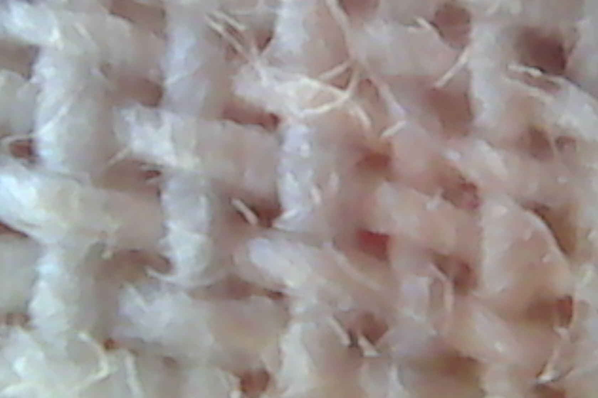
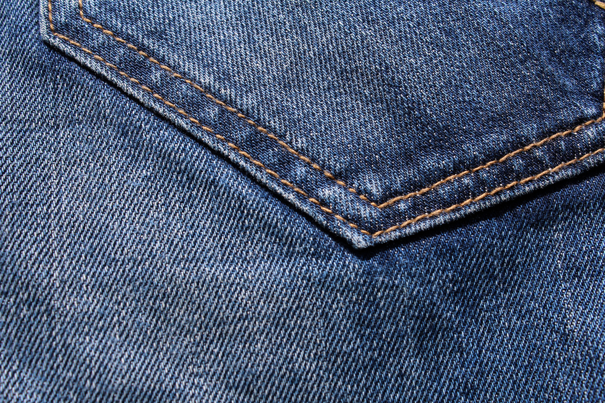
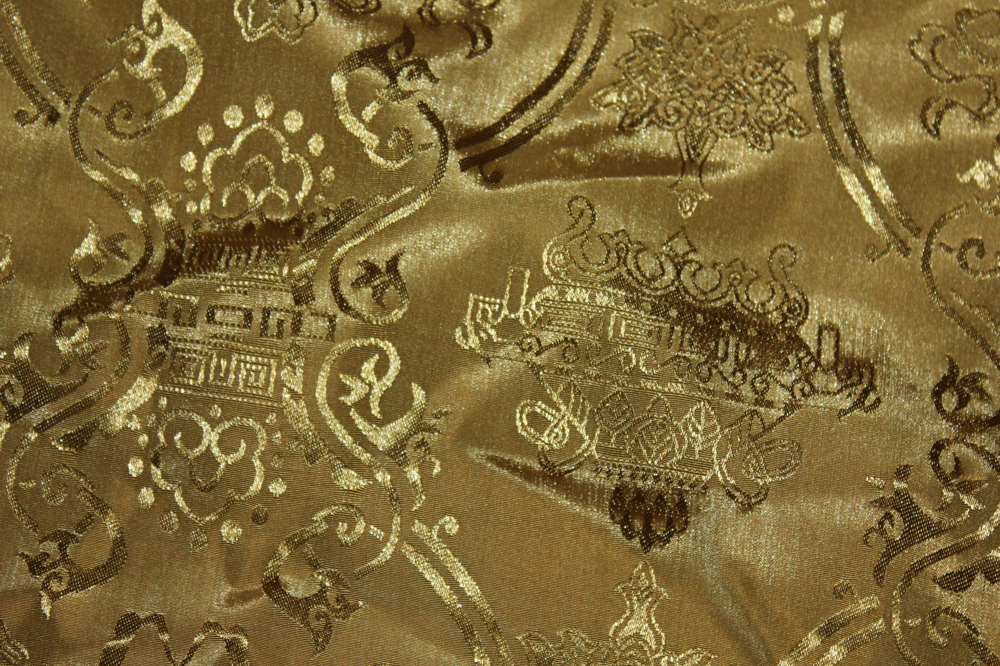
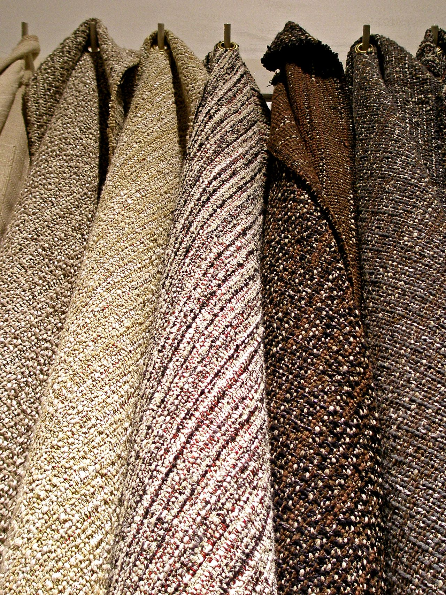
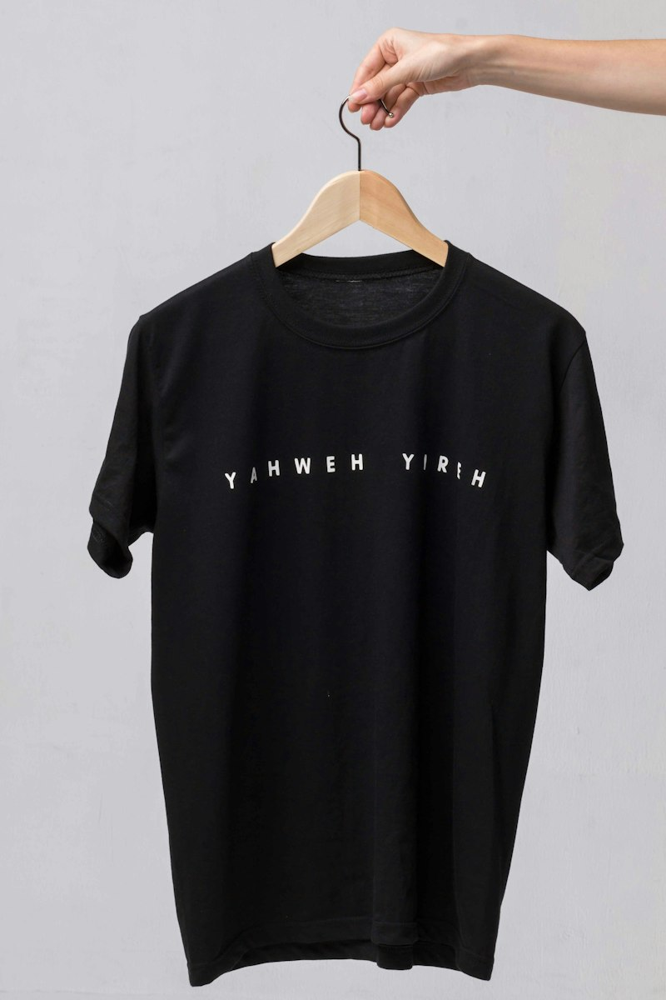
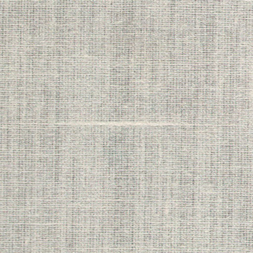
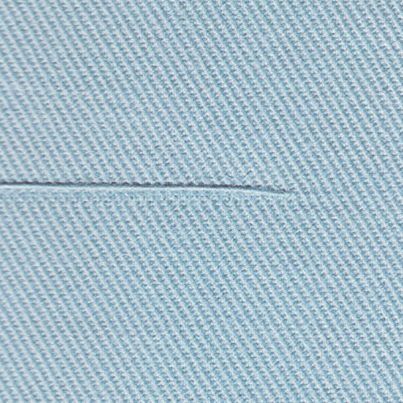

Verified Phone Camera Capture
Defect Detected
Benchmark Photo: Dark Mulberry Silk with Puncture Hole
This is an authentic smartphone photograph of a piece of black silk cloth. The continuous filament fibers give it an unmistakable high-surface sheen, while the central puncture hole creates radiating tension stress-wrinkles across the satin weave.
| Identified Fiber: | Mulberry Silk / Satin (98.1% Confidence) |
| Condition Status: | Damaged (Central Puncture Hole) |
| Clean Silk Baseline: | ₹120 – ₹130 / kg |
| Recycled Valuation: | ₹90 – ₹95 / kg (-25% Defect Markdown) |
| Circularity Route: | Silk yarn unwinding & fiber garnetting |

■ 01. Clean Fabric Swatches (Undamaged Cloth Pieces)
Macro camera photographs of flat cloth swatches and cutting remnants with zero tears, holes, or stains.

100% Natural Cotton Weave
| Fiber Type: | Cotton (94.2%) |
| Defects: | 0 Detected |
| Secondary Price: | ₹42 – ₹48 / kg |


Classic Indigo Denim Cloth
| Fiber Type: | Denim / Cotton (96.5%) |
| Defects: | 0 Detected |
| Secondary Price: | ₹58 – ₹65 / kg |


Pure Golden Mulberry Silk
| Fiber Type: | Silk (98.1%) |
| Defects: | 0 Detected |
| Secondary Price: | ₹120 – ₹130 / kg |

Organic Natural Linen Cloth
| Fiber Type: | Linen (91.8%) |
| Defects: | 0 Detected |
| Secondary Price: | ₹70 – ₹80 / kg |


Textured Wool Tweed Fabric
| Fiber Type: | Wool (89.4%) |
| Defects: | 0 Detected |
| Secondary Price: | ₹88 – ₹102 / kg |

■ 02. Damaged Fabric Swatches (Physical Tears, Holes & Stains)
Real physical defects on cloth remnants. The CUTLOOP AI Vision model detects the flaw, bounds it, and recalculates market value.
Silk Swatch (Puncture Hole)
| Fiber Type: | Silk (98.1%) |
| Defect Type: | Puncture Hole |
| Secondary Price: | ₹90 – ₹95 / kg |
Denim Swatch (Frayed Tear)
| Fiber Type: | Denim / Cotton (95.0%) |
| Defect Type: | Torn / Frayed Cut |
| Secondary Price: | ₹45 – ₹52 / kg |


Woven Cloth (Coffee Stain)
| Fiber Type: | Cotton / Linen (92.4%) |
| Defect Type: | Liquid Chemical Stain |
| Secondary Price: | ₹30 – ₹36 / kg |


Cloth Swatch (Weave Hole)
| Fiber Type: | Cotton (93.1%) |
| Defect Type: | Structural Hole |
| Secondary Price: | ₹32 – ₹38 / kg |


Fabric Swatch (Broken Stitch)
| Fiber Type: | Polyester / Cotton (90.5%) |
| Defect Type: | Broken Thread Flaw |
| Secondary Price: | ₹26 – ₹32 / kg |